library(tidyverse)
library(tidymodels)
library(bundle)
library(vetiver)
library(pins)
library(readr)
library(stacks)
library(tidyverse)
library(skimr)
library(GGally)
library(ggmap)
library(visdat)
library(corrr)
library(ggsignif)
library(gt)
library(vip)
library(themis)
library(purrr)
library(keras)
library(ranger)
library(xgboost)
library(kknn)
library(reticulate)Titanic Dataset
Note
The content of this tutorial is primarily based on the book “Tidy Modeling with R” by Max Kuhn and Julia Silge (2021). The analysis scheme also follows the approach outlined in the R Classification with Tidymodels tutorial.
We will use the Titanic dataset from Kaggle for our analysis, with the goal of building a model to predict which passengers survived the Titanic shipwreck. We will implement a classification workflow using the tidymodels package, demonstrating how workflows and recipes can be utilized for effective model building. Our research question is:
“What sorts of people were more likely to survive?”
To address this question, we will consider factors such as the number of lifeboats, age, gender, and socio-economic class, based on the Titanic’s sinking on April 15, 1912. We will use classification methods to categorize passengers into those who survived and those who did not. Common classification techniques like logistic regression, random forests and K-nearest neighbors will be employed to optimize the solution with minimal error.
First, we will load the necessary packages for the analysis:
We import the data for the analysis
ttest <- read_csv("/Users/nangosyah/Documents/Kaggle Data-sets/titanic/test.csv")
ttrain <- read_csv("/Users/nangosyah/Documents/Kaggle Data-sets/titanic/train.csv")
tsub <- read_csv("/Users/nangosyah/Documents/Kaggle Data-sets/titanic/gender_submission.csv")Format Data
To gain a preliminary understanding of the dataset, we will perform some exploratory data analysis (EDA). We start by examining a few rows from the dataset to get an initial impression of its structure and contents.
glimpse(ttrain)Rows: 891
Columns: 12
$ PassengerId <dbl> 1, 2, 3, 4, 5, 6, 7, 8, 9, 10, 11, 12, 13, 14, 15, 16, 17,…
$ Survived <dbl> 0, 1, 1, 1, 0, 0, 0, 0, 1, 1, 1, 1, 0, 0, 0, 1, 0, 1, 0, 1…
$ Pclass <dbl> 3, 1, 3, 1, 3, 3, 1, 3, 3, 2, 3, 1, 3, 3, 3, 2, 3, 2, 3, 3…
$ Name <chr> "Braund, Mr. Owen Harris", "Cumings, Mrs. John Bradley (Fl…
$ Sex <chr> "male", "female", "female", "female", "male", "male", "mal…
$ Age <dbl> 22, 38, 26, 35, 35, NA, 54, 2, 27, 14, 4, 58, 20, 39, 14, …
$ SibSp <dbl> 1, 1, 0, 1, 0, 0, 0, 3, 0, 1, 1, 0, 0, 1, 0, 0, 4, 0, 1, 0…
$ Parch <dbl> 0, 0, 0, 0, 0, 0, 0, 1, 2, 0, 1, 0, 0, 5, 0, 0, 1, 0, 0, 0…
$ Ticket <chr> "A/5 21171", "PC 17599", "STON/O2. 3101282", "113803", "37…
$ Fare <dbl> 7.2500, 71.2833, 7.9250, 53.1000, 8.0500, 8.4583, 51.8625,…
$ Cabin <chr> NA, "C85", NA, "C123", NA, NA, "E46", NA, NA, NA, "G6", "C…
$ Embarked <chr> "S", "C", "S", "S", "S", "Q", "S", "S", "S", "C", "S", "S"…At this stage, we will ensure that the data types are correct, particularly for the target variable Survived, which should be a factor. Similarly, all categorical variables will be converted to factors. We shall align these data conversions both in out testing set and and training set.
# training set
ttrain$Sex <- as.factor(ttrain$Sex)
ttrain$Survived <- as.factor(ttrain$Survived)
ttrain$Pclass <- as.factor(ttrain$Pclass)
ttrain$Embarked <- as.factor(ttrain$Embarked)
# testing set
ttest$Sex <- as.factor(ttest$Sex)
ttest$Pclass <- as.factor(ttest$Pclass)
ttest$Embarked <- as.factor(ttest$Embarked)Missing data
After applying the transformations, we will now examine the first 5 records to get an initial sense of the data we’re working with. This allows us to verify the changes and better understand the dataset structure.
ttrain %>%
slice_head(n = 5) %>%
gt() | PassengerId | Survived | Pclass | Name | Sex | Age | SibSp | Parch | Ticket | Fare | Cabin | Embarked |
|---|---|---|---|---|---|---|---|---|---|---|---|
| 1 | 0 | 3 | Braund, Mr. Owen Harris | male | 22 | 1 | 0 | A/5 21171 | 7.2500 | NA | S |
| 2 | 1 | 1 | Cumings, Mrs. John Bradley (Florence Briggs Thayer) | female | 38 | 1 | 0 | PC 17599 | 71.2833 | C85 | C |
| 3 | 1 | 3 | Heikkinen, Miss. Laina | female | 26 | 0 | 0 | STON/O2. 3101282 | 7.9250 | NA | S |
| 4 | 1 | 1 | Futrelle, Mrs. Jacques Heath (Lily May Peel) | female | 35 | 1 | 0 | 113803 | 53.1000 | C123 | S |
| 5 | 0 | 3 | Allen, Mr. William Henry | male | 35 | 0 | 0 | 373450 | 8.0500 | NA | S |
From the data, we observe the presence of NA values in the Cabin and Age columns. We will propose methods to handle these missing values in later stages. For now, we will proceed to visualize the data structure to gain insights into its distribution and patterns.
vis_dat(ttrain)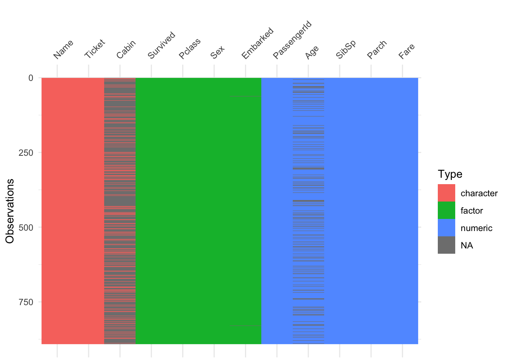
The data format appears to be in good shape after the adjustments made, aside from the missing data (NAs) that still need attention. To assess the extent of missingness, we will now examine the percentage of missing values across the dataset. For this task, we will use functions from the visdat package to visualize and quantify missingness.
vis_miss(ttrain, sort_miss = TRUE)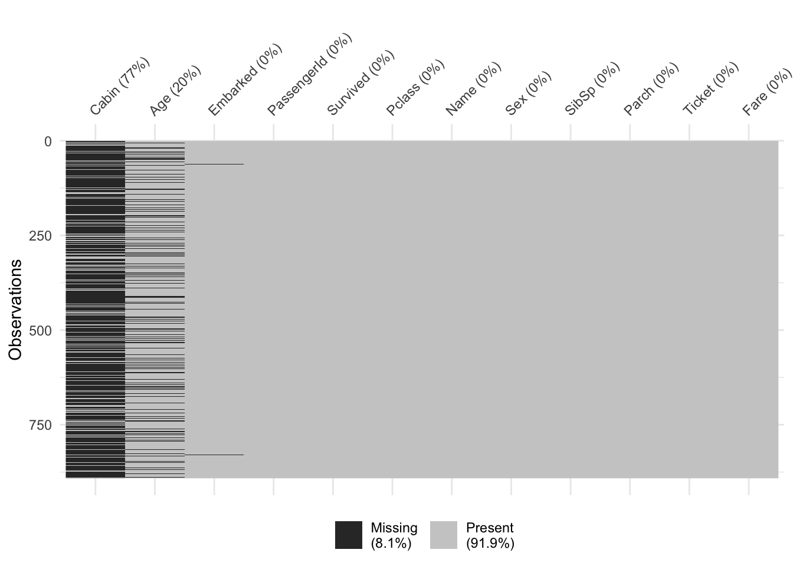
An alternative method to the same thing could be with the is.na function from base R which can be achieved as below:
is.na(ttrain) %>% colSums()PassengerId Survived Pclass Name Sex Age
0 0 0 0 0 177
SibSp Parch Ticket Fare Cabin Embarked
0 0 0 0 687 2 The dataset has significant missingness, with 77% missing values for the Cabin variable and 20% missing for Age. This level of missing data can cause issues, particularly for models that don’t handle missingness directly. These missing values will be addressed in later stages to ensure model robustness and accuracy.
Create Variables
To enhance model learning capabilities, we created a new feature: the mean age per class (age_perclass). This feature represents the average age of passengers within each Pclass, providing insight into the typical age distribution by class. Additionally, we used these class-specific means to impute missing values in the Age variable, ensuring that missing ages were replaced with the average age of passengers in the same class.
ttrain <- ttrain %>%
group_by(Pclass) %>%
mutate(age_perclass = mean(Age, na.rm = TRUE)) %>%
ungroup() %>%
mutate(Age = ifelse(is.na(Age), age_perclass, Age))Data Overview
We will now review the data overview following the manipulations using the skimr package. This package provides a detailed summary of the dataset, including data types, missing values, and summary statistics. Here’s how we’ll proceed:
skim(ttrain)| Name | ttrain |
| Number of rows | 891 |
| Number of columns | 13 |
| _______________________ | |
| Column type frequency: | |
| character | 3 |
| factor | 4 |
| numeric | 6 |
| ________________________ | |
| Group variables | None |
Variable type: character
| skim_variable | n_missing | complete_rate | min | max | empty | n_unique | whitespace |
|---|---|---|---|---|---|---|---|
| Name | 0 | 1.00 | 12 | 82 | 0 | 891 | 0 |
| Ticket | 0 | 1.00 | 3 | 18 | 0 | 681 | 0 |
| Cabin | 687 | 0.23 | 1 | 15 | 0 | 147 | 0 |
Variable type: factor
| skim_variable | n_missing | complete_rate | ordered | n_unique | top_counts |
|---|---|---|---|---|---|
| Survived | 0 | 1 | FALSE | 2 | 0: 549, 1: 342 |
| Pclass | 0 | 1 | FALSE | 3 | 3: 491, 1: 216, 2: 184 |
| Sex | 0 | 1 | FALSE | 2 | mal: 577, fem: 314 |
| Embarked | 2 | 1 | FALSE | 3 | S: 644, C: 168, Q: 77 |
Variable type: numeric
| skim_variable | n_missing | complete_rate | mean | sd | p0 | p25 | p50 | p75 | p100 | hist |
|---|---|---|---|---|---|---|---|---|---|---|
| PassengerId | 0 | 1 | 446.00 | 257.35 | 1.00 | 223.50 | 446.00 | 668.50 | 891.00 | ▇▇▇▇▇ |
| Age | 0 | 1 | 29.29 | 13.21 | 0.42 | 22.00 | 26.00 | 37.00 | 80.00 | ▂▇▃▁▁ |
| SibSp | 0 | 1 | 0.52 | 1.10 | 0.00 | 0.00 | 0.00 | 1.00 | 8.00 | ▇▁▁▁▁ |
| Parch | 0 | 1 | 0.38 | 0.81 | 0.00 | 0.00 | 0.00 | 0.00 | 6.00 | ▇▁▁▁▁ |
| Fare | 0 | 1 | 32.20 | 49.69 | 0.00 | 7.91 | 14.45 | 31.00 | 512.33 | ▇▁▁▁▁ |
| age_perclass | 0 | 1 | 29.29 | 5.38 | 25.14 | 25.14 | 25.14 | 29.88 | 38.23 | ▇▃▁▁▃ |
Data Splitting
In machine learning, we typically divide the data into a training set and a testing set. The training set is used to fit the models, while the testing set is used to evaluate their performance. To ensure that the training set is representative of the overall dataset, we must correctly partition the initial dataset.
We will use a histogram to visualize the distribution of the dependent variable, Survived, in our data split.
ttrain %>%
ggplot(aes(Survived)) +
geom_bar() 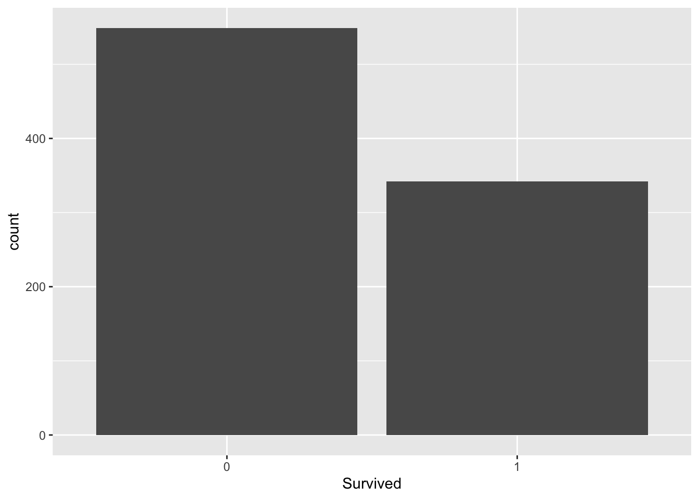
To perform the split, we will use the rsample package from the tidymodels suite. This package helps create an object containing information about the split. We will then use the training() and testing() functions to generate the training and test sets.
Here’s how to do it:
set.seed(123)
# split 3/4 of the data into the training set
data_split <- initial_split(ttrain,
prop = 3/4,
strata = Survived)
# two sets
data_train <- training(data_split)
data_test <- testing(data_split)Data Exploration
We will explore the training data to gain insights and identify which variables are important for modeling. This process is iterative: we may build a prototype model, analyze the results, and refine the model based on new insights from exploration.
This exploration and modeling will be conducted exclusively with the training set. We shall create a copy of the training set so that we don’t alter the data during our exploration phase.
explore <- data_trainWe will now use the training dataset to explore relationships between predictor variables and the outcome variable, Survived. This exploration will help us identify which variables are most relevant for predicting passenger survival.
Numerical Variables
We will examine the numerical variables to check fro differences between passengers who survived and those who did not. This will help us understand how these variables vary with survival status.
explore %>%
ggplot(aes(x = Survived, y = Age,
fill = Survived, color = Survived)) +
geom_boxplot(alpha=0.4) 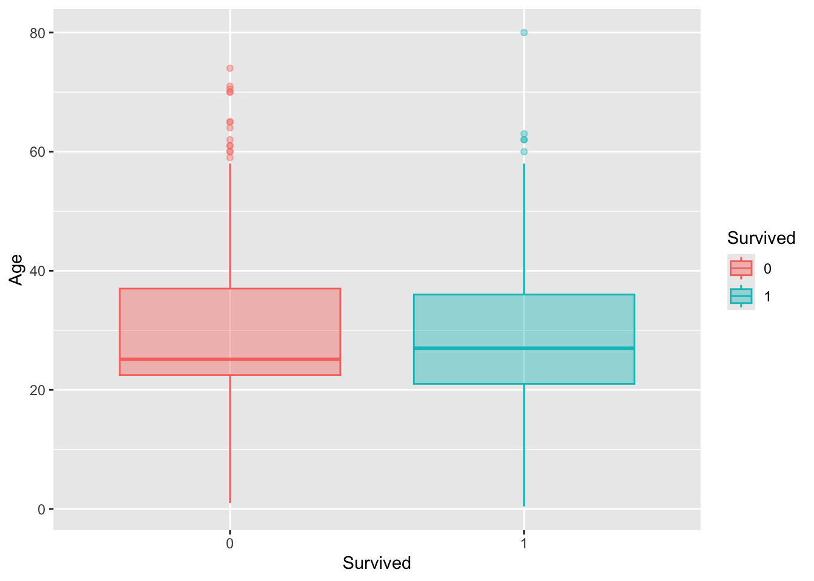
From the exploratory data analysis (EDA), we observe that:
Some numerical variables are on different scales.
Several variables exhibit heavy tails and some show bi-modal distributions.
To prepare the data for modeling, we need to transform these variables to approximate a normal distribution. This will help improve model performance.
We will use the variables Age, SibSp, Parch, and Fare as predictors in our model.
Categorical Variables
We go ahead analyse the categorical variables in relation with the dependent variable Survived. We output tables giving us an idea of the grouping in the data.
| Titanic Survivors | ||
|---|---|---|
| 0 - Died 1 - Survived | ||
| Sex | Districts | Percent |
| 0 | ||
| female | 59.00 | 14.36 |
| male | 352.00 | 85.64 |
| 1 | ||
| female | 176.00 | 68.75 |
| male | 80.00 | 31.25 |
explore %>%
ggplot(aes(Survived, Sex)) +
geom_bin2d() +
scale_fill_continuous(type = "viridis") 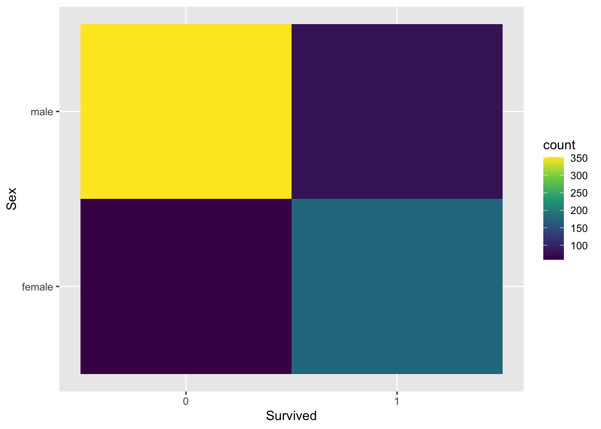
From the plot, we observe that the majority of passengers who died are male, highlighted in yellow, compared to females. Additionally, a higher proportion of survivors are female. We will also examine if the socio-economic status, indicated by the cabin class, can help distinguish between those who survived and those who did not.
explore %>%
ggplot(aes(Survived, Pclass)) +
geom_bin2d() +
scale_fill_continuous(type = "viridis") 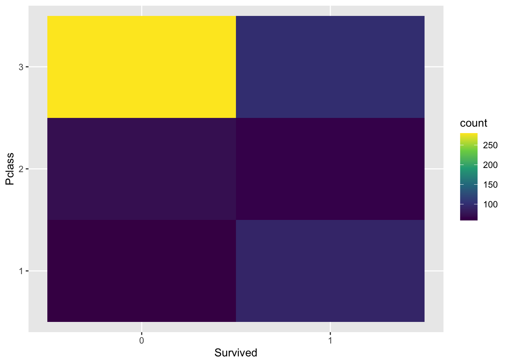
The plot shows that the majority of passengers who died were from the lowest socio-economic class, with Class 3 having the highest number of deaths compared to Classes 1 and 2.
Therefore, we will include all categorical variables Pclass, Sex, and Embarked—as predictors in our model.
Data Preparation
To prepare our data for modeling, we will:
Handle missing values.
Address and remove outliers.
Perform feature selection.
Engineer new features.
Scale variables.
Create a validation set.
We will use the tidymodels suite, specifically the recipes and workflows packages, for these steps.
recipesare used for data processing, including:Data cleaning: Fix or remove outliers, fill in missing values, or drop rows/columns with excessive missing data.
Feature selection: Remove attributes that do not provide useful information.
Feature scaling: Standardize or normalize features.
Feature engineering: Discretize continuous features, decompose features (e.g., extract weekday from a date), apply transformations and aggregate features into new, meaningful features.
The recipes package allows us to create reusable objects for data preprocessing that can be applied consistently throughout the modeling process. In the tidymodels framework, this is typically integrated with the workflows package, which combines the preprocessed data (from the recipe) with the chosen model, streamlining the modeling process and ensuring that the same preprocessing steps are applied during both training and evaluation.
Now to prepare our data from modeling we shall select the variables we shall use in our model.
modelttrain <-
data_train %>%
select(
PassengerId, Survived, Age, Sex,
Pclass, SibSp, Parch,Fare, Embarked)
glimpse(modelttrain)Rows: 667
Columns: 9
$ PassengerId <dbl> 6, 7, 8, 13, 14, 15, 19, 21, 25, 27, 28, 31, 36, 38, 41, 4…
$ Survived <fct> 0, 0, 0, 0, 0, 0, 0, 0, 0, 0, 0, 0, 0, 0, 0, 0, 0, 0, 0, 0…
$ Age <dbl> 25.14062, 54.00000, 2.00000, 20.00000, 39.00000, 14.00000,…
$ Sex <fct> male, male, male, male, male, female, female, male, female…
$ Pclass <fct> 3, 1, 3, 3, 3, 3, 3, 2, 3, 3, 1, 1, 1, 3, 3, 2, 3, 3, 3, 3…
$ SibSp <dbl> 0, 0, 3, 0, 1, 0, 1, 0, 3, 0, 3, 0, 1, 0, 1, 1, 0, 0, 1, 2…
$ Parch <dbl> 0, 0, 1, 0, 5, 0, 0, 0, 1, 0, 2, 0, 0, 0, 0, 0, 0, 0, 0, 0…
$ Fare <dbl> 8.4583, 51.8625, 21.0750, 8.0500, 31.2750, 7.8542, 18.0000…
$ Embarked <fct> Q, S, S, S, S, S, S, S, S, C, S, C, S, S, S, S, C, S, Q, C…Now that we have our final selected variables for modeling we shall do the initial data split again since we updated the original data.
set.seed(123)
data_split <- initial_split(modelttrain,
prop = 3/4,
strata = Survived)
data_train <- training(data_split)
data_test <- testing(data_split)With our new data split, we can now create a recipe for data preprocessing. For detailed guidance on various preprocessing techniques, refer to https://www.tmwr.org/pre-proc-table.html. Below is the code to create our recipe:
modelttrain_recipe <-
recipe(Survived ~ .,data = modelttrain) %>%
update_role(PassengerId, new_role = "ID") %>%
step_log(Parch,SibSp,Fare) %>%
step_naomit(everything(), skip = TRUE) %>%
step_novel(all_nominal(), -all_outcomes()) %>%
step_normalize(all_numeric(), -all_outcomes(),
-PassengerId) %>%
step_zv(all_numeric(), -all_outcomes()) %>%
step_corr(all_numeric(), threshold = 0.7, method = "spearman") The modelttrain_recipe is designed to preprocess the data for modeling a detailed breakdown of each step is given below:
First, we define the recipe with
recipe(Survived ~ ., data = modelttrain), specifyingSurvivedas the outcome variable and all other columns as predictors using themodelttraindataset.Next, we use
update_role(PassengerId, new_role = "ID")to usePassengerIdas an identifier rather than a predictor. This allows us to keep track of individual records without includingPassengerIdin the model.We then apply
step_log(Parch, SibSp, Fare, Age)to log-transform the skewed numerical variables. This step addresses the skewness in the distributions but note that it can cause issues with negative values.To handle missing values, we use
step_naomit(everything(), skip = TRUE), which removes rows withNAorNaNvalues. Theskip = TRUEargument ensures that this step is not applied to new data during model assessment, thus preserving the number of samples.The
step_novel(all_nominal(), -all_outcomes())step converts nominal variables to factors and handles any new levels not seen during training. This ensures that all categorical variables are appropriately processed.We standardize numeric variables using
step_normalize(all_numeric(), -all_outcomes(), -PassengerId), which scales predictors to have a mean of zero and a standard deviation of one.We also remove variables with zero variance using
step_zv(all_numeric(), -all_outcomes()), as these variables do not provide useful information for modeling.Finally,
step_corr(all_predictors(), threshold = 0.7, method = "spearman")removes predictors that have high correlations (greater than 0.7) with other predictors, this cab reduce problems related to multicollinearity.
Our new data after preprocessing now looks as below:
summary(modelttrain_recipe)# A tibble: 9 × 4
variable type role source
<chr> <list> <chr> <chr>
1 PassengerId <chr [2]> ID original
2 Age <chr [2]> predictor original
3 Sex <chr [3]> predictor original
4 Pclass <chr [3]> predictor original
5 SibSp <chr [2]> predictor original
6 Parch <chr [2]> predictor original
7 Fare <chr [2]> predictor original
8 Embarked <chr [3]> predictor original
9 Survived <chr [3]> outcome originalTo verify that our recipe has been applied correctly, we can use the prep() and juice() functions. The prep() function prepares the recipe based on the training data, and the juice() function extracts the processed data to inspect the results.
model_data <-
modelttrain_recipe %>%
prep() %>%
juice()
glimpse(model_data)Rows: 665
Columns: 6
$ PassengerId <dbl> 6, 7, 8, 13, 14, 15, 19, 21, 25, 27, 28, 31, 36, 38, 41, 4…
$ Age <dbl> -0.3073507, 1.8760623, -2.0580997, -0.6962744, 0.7412079, …
$ Sex <fct> male, male, male, male, male, female, female, male, female…
$ Pclass <fct> 3, 1, 3, 3, 3, 3, 3, 2, 3, 3, 1, 1, 1, 3, 3, 2, 3, 3, 3, 3…
$ Embarked <fct> Q, S, S, S, S, S, S, S, S, C, S, C, S, S, S, S, C, S, Q, C…
$ Survived <fct> 0, 0, 0, 0, 0, 0, 0, 0, 0, 0, 0, 0, 0, 0, 0, 0, 0, 0, 0, 0…Validation Set
We will now create a validation set that will be used for hyper-parameter tuning during model training. To achieve this, we apply k-fold cross-validation, which helps in splitting the data into multiple folds for more robust evaluation. We will use the vfold_cv() function to generate a set of validation folds.
set.seed(145)
cv_folds <-
vfold_cv(modelttrain,
v = 5,
strata = Survived) Model building
In the model-building process using the tidy-models framework, we follow a structured approach. We begin by selecting the model type, then specify the engine to be used, and finally define the mode, either regression or classification based on the task at hand. We shall specify different models to be used.
Logistic Regression
log_spec <-
logistic_reg() %>%
set_engine(engine = "glm") %>%
set_mode("classification")Random Forest
rf_spec <-
rand_forest() %>%
set_engine("ranger", importance = "impurity") %>%
set_mode("classification")K-Nearest Neighbor
knn_spec <-
nearest_neighbor(neighbors = 4) %>%
set_engine("kknn") %>%
set_mode("classification") Create Workflows
Next, we create a workflow to integrate the recipe we previously developed into our modeling process. A workflow is an object that brings together both the recipe and the modeling step for seamless execution.
We now bundle the recipe with the earlier stated models:
Logistic Regression
log_wflow <-
workflow() %>%
add_recipe(modelttrain_recipe) %>%
add_model(log_spec)Random Forest
rf_wflow <-
workflow() %>%
add_recipe(modelttrain_recipe) %>%
add_model(rf_spec) K-Nearest Neighbor
knn_wflow <-
workflow() %>%
add_recipe(modelttrain_recipe) %>%
add_model(knn_spec)Evaluate Models
To evaluate our models, we will use the validation set (cv_folds) to estimate model performance. We will apply the fit_resamples() function to fit the models on each fold and store the results. In order to save predictions from the model and visualise the model fit and residuals we shall use control_resamples(save_pred = TRUE) and finally use the collect_metrics() function to pick the model that does best on the validation set.
We shall use our workflow object to now perform resampling and use metric_set()from the yardstick package to choose common performance metrics.
Logistic Regression
log_res <-
log_wflow %>%
fit_resamples(
resamples = cv_folds,
metrics = metric_set(
recall, precision, f_meas,
accuracy, kap,
roc_auc, sens, spec),
control = control_resamples(
save_pred = TRUE)
) Performance Metrics
From the fitted models we show the performance over all folds below:
log_res %>% collect_metrics(summarize = TRUE)# A tibble: 8 × 6
.metric .estimator mean n std_err .config
<chr> <chr> <dbl> <int> <dbl> <chr>
1 accuracy binary 0.794 5 0.0135 Preprocessor1_Model1
2 f_meas binary 0.837 5 0.0108 Preprocessor1_Model1
3 kap binary 0.557 5 0.0292 Preprocessor1_Model1
4 precision binary 0.819 5 0.0119 Preprocessor1_Model1
5 recall binary 0.856 5 0.0136 Preprocessor1_Model1
6 roc_auc binary 0.837 5 0.0152 Preprocessor1_Model1
7 sens binary 0.856 5 0.0136 Preprocessor1_Model1
8 spec binary 0.693 5 0.0221 Preprocessor1_Model1We also show performance for every single fold:
log_res %>% collect_metrics(summarize = FALSE)# A tibble: 40 × 5
id .metric .estimator .estimate .config
<chr> <chr> <chr> <dbl> <chr>
1 Fold1 recall binary 0.855 Preprocessor1_Model1
2 Fold1 precision binary 0.798 Preprocessor1_Model1
3 Fold1 f_meas binary 0.826 Preprocessor1_Model1
4 Fold1 accuracy binary 0.776 Preprocessor1_Model1
5 Fold1 kap binary 0.514 Preprocessor1_Model1
6 Fold1 sens binary 0.855 Preprocessor1_Model1
7 Fold1 spec binary 0.647 Preprocessor1_Model1
8 Fold1 roc_auc binary 0.861 Preprocessor1_Model1
9 Fold2 recall binary 0.854 Preprocessor1_Model1
10 Fold2 precision binary 0.854 Preprocessor1_Model1
# ℹ 30 more rowsCollect predictions
To collect predictions from the model we use the collect_predictions function:
log_pred <-
log_res %>%
collect_predictions()Confusion Matrix
We also create a confusion matrix using conf_mat() function, and heat-maps can also be used to visualise the same results.
log_pred %>%
conf_mat(Survived, .pred_class) Truth
Prediction 0 1
0 352 78
1 59 176log_pred %>%
conf_mat(Survived, .pred_class) %>%
autoplot(type = "heatmap")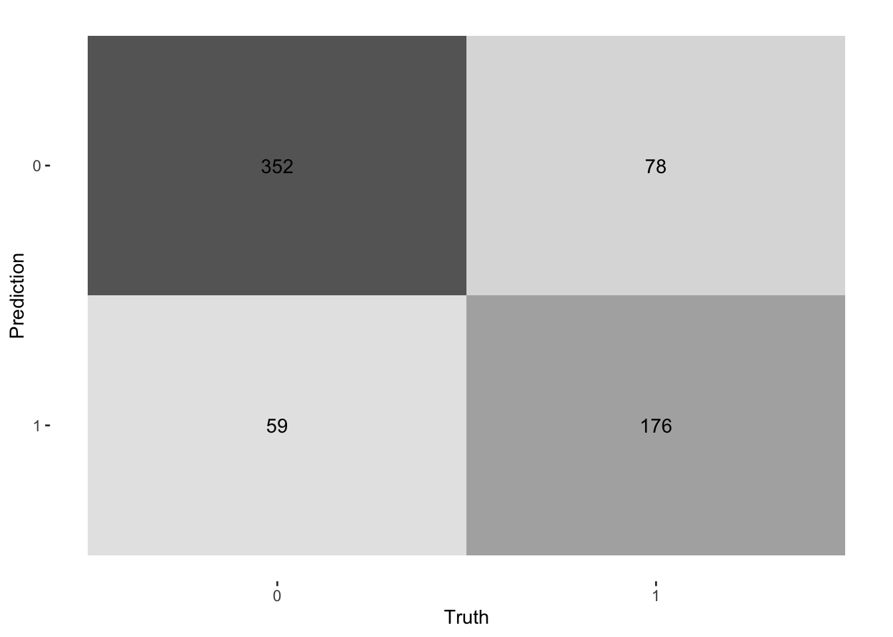
ROC Curve
Receiver Operator Curves are used in classification problems to show performance for given models, in the classification process, using the roc_curve() function with the relevant class probability .pred_above we can be able to achieve a ROC-Curve showing the performance of each fold.
log_pred %>%
group_by(id) %>%
roc_curve(Survived, .pred_0) %>%
autoplot()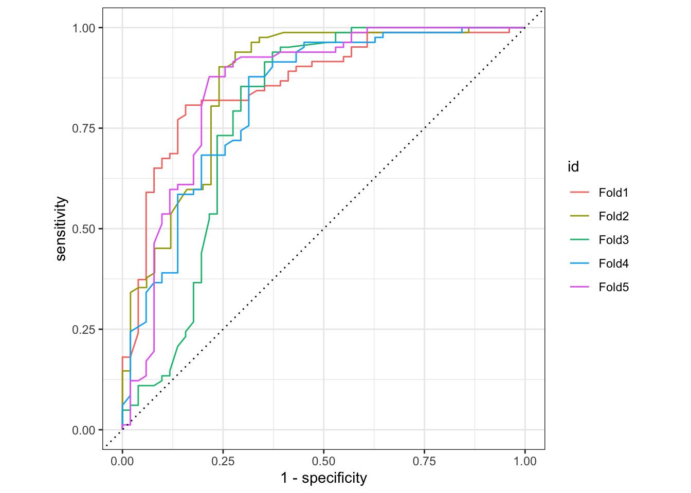
Probability Distributions
We can also visualise the predicted probabilities for the two classes.
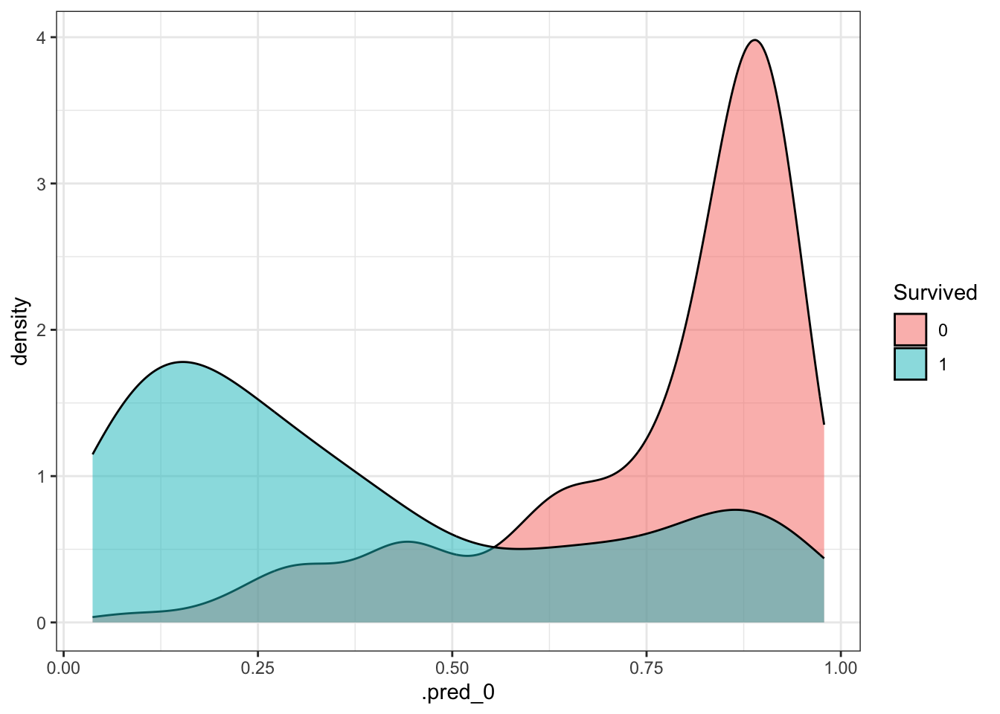
Next, we will apply the same process to all the models mentioned earlier, but we will focus solely on evaluating their performance by comparing the relevant metrics.
Random Forest
# A tibble: 8 × 6
.metric .estimator mean n std_err .config
<chr> <chr> <dbl> <int> <dbl> <chr>
1 accuracy binary 0.802 5 0.00992 Preprocessor1_Model1
2 f_meas binary 0.851 5 0.00926 Preprocessor1_Model1
3 kap binary 0.561 5 0.0187 Preprocessor1_Model1
4 precision binary 0.794 5 0.00297 Preprocessor1_Model1
5 recall binary 0.917 5 0.0198 Preprocessor1_Model1
6 roc_auc binary 0.843 5 0.0172 Preprocessor1_Model1
7 sens binary 0.917 5 0.0198 Preprocessor1_Model1
8 spec binary 0.617 5 0.00981 Preprocessor1_Model1K-Nearest Neighbor
# A tibble: 8 × 6
.metric .estimator mean n std_err .config
<chr> <chr> <dbl> <int> <dbl> <chr>
1 accuracy binary 0.774 3 0.00434 Preprocessor1_Model1
2 f_meas binary 0.829 3 0.00794 Preprocessor1_Model1
3 kap binary 0.501 3 0.00779 Preprocessor1_Model1
4 precision binary 0.778 3 0.0144 Preprocessor1_Model1
5 recall binary 0.890 3 0.0373 Preprocessor1_Model1
6 roc_auc binary 0.812 3 0.0129 Preprocessor1_Model1
7 sens binary 0.890 3 0.0373 Preprocessor1_Model1
8 spec binary 0.588 3 0.0519 Preprocessor1_Model1Compare Models
We now extract the performance metrics from all the fitted models for comparison.
# plot metrics
ggplot(mean_metrics, aes(x = model, y = estimate_value, fill = .metric)) +
geom_col(position = "dodge") +
facet_wrap(~.metric, scales = "free_y") +
theme_bw() +
theme(legend.position = "none",
axis.title.y = element_blank()) +
geom_text(aes(label = sprintf("%.2f", estimate_value)),
position = position_dodge(width = 0.9),
vjust = -0.5,
size = 3) 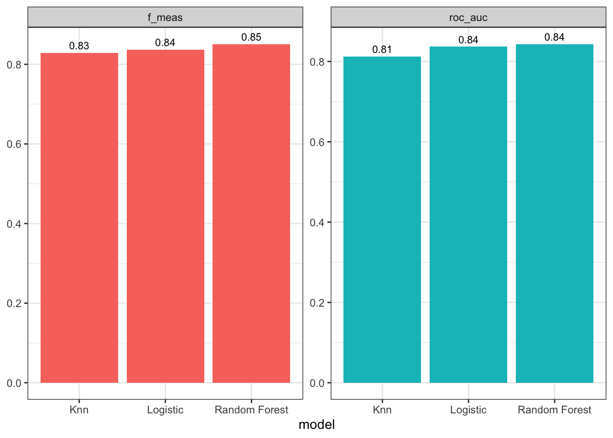
The performance across the models is quite similar, with Random Forest performing slightly better. We will now evaluate the final model on the test set.
To accomplish this, the last_fit() function from the tidymodels package can be used. This function fits the model to the entire training dataset and evaluates it on the test set. You’ll need to provide the last_fit() function with the workflow object of the best model and the data split object (excluding the training data). This will allow us to obtain the performance metrics for the final model.
last_fit_rf <- last_fit(rf_wflow,
split = data_split,
metrics = metric_set(
recall, precision, f_meas,
accuracy, kap,
roc_auc, sens, spec)
)To display the performance metrics, we will use the collect_metrics() function as previously done.
last_fit_rf %>%
collect_metrics()# A tibble: 8 × 4
.metric .estimator .estimate .config
<chr> <chr> <dbl> <chr>
1 recall binary 0.903 Preprocessor1_Model1
2 precision binary 0.769 Preprocessor1_Model1
3 f_meas binary 0.830 Preprocessor1_Model1
4 accuracy binary 0.772 Preprocessor1_Model1
5 kap binary 0.492 Preprocessor1_Model1
6 sens binary 0.903 Preprocessor1_Model1
7 spec binary 0.562 Preprocessor1_Model1
8 roc_auc binary 0.789 Preprocessor1_Model1Based on our results we have a roc_auc of 0.7924757 which is generally considered a good performance although we could do better. This means our model has a high ability of finding true positive results than false positives.
Based on our results, we should also examine variable importance to identify the key features influencing the classification.
last_fit_rf %>%
pluck(".workflow", 1) %>%
extract_fit_parsnip() %>%
vip(num_features = 10)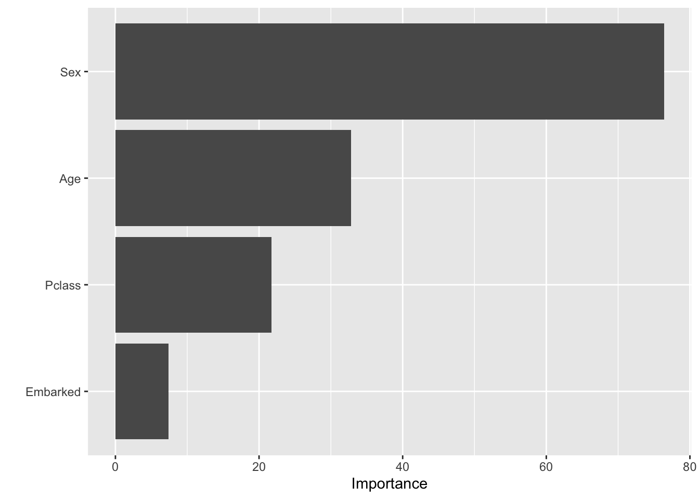
From the model we see the two most important predictors for our models is Sex and Age of the passenger.
We now take a look at the confusion matrix for the final model:
last_fit_rf %>%
collect_predictions() |>
conf_mat(Survived, .pred_class) |>
autoplot(type = "heatmap")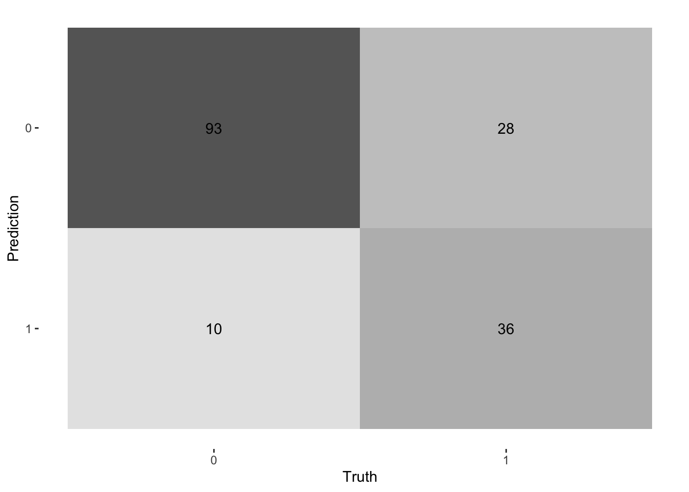
We shall also create an ROC Curve for the final model:
last_fit_rf |>
collect_predictions() |>
roc_curve(Survived, .pred_0) |>
autoplot()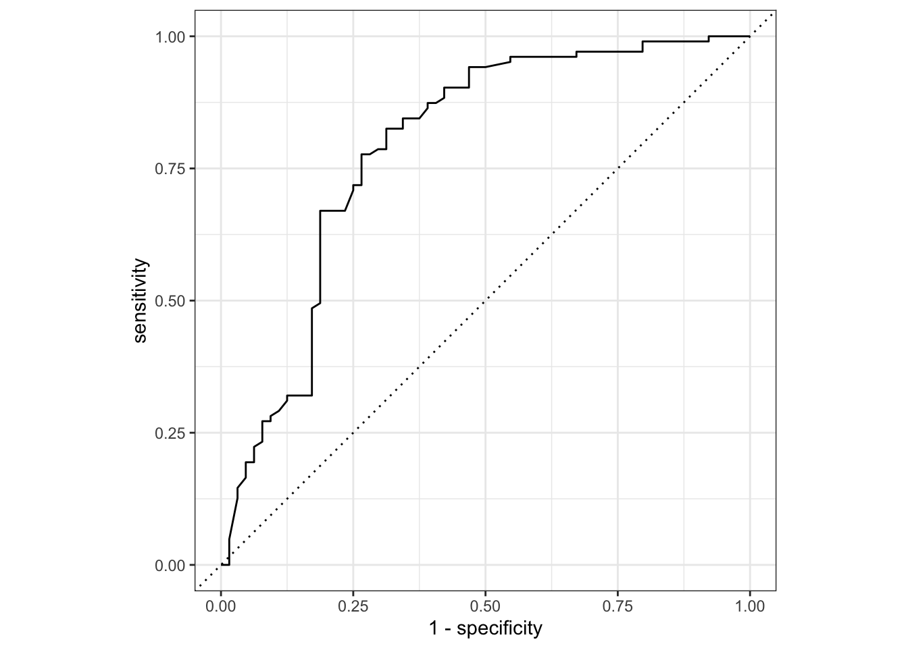
Given that the validation and test set performances are similar, we conclude that the Random Forest model with the selected hyperparameters is the best choice for predicting Survival on the Titanic.
rf_predictions <- last_fit_rf %>%
collect_predictions()# Impute missing values in the test set
ttest <- ttest %>%
group_by(Pclass) %>%
mutate(Age = mean(Age, na.rm = TRUE)) %>%
ungroup() %>%
mutate(Age = ifelse(is.na(Age), Age, Age))
# extract fitted workflow
final_workflow <- extract_workflow(last_fit_rf)
# workflow for predictions
rf_predictions <- predict(final_workflow, ttest) %>%
bind_cols(ttest %>% select(PassengerId))
# reorder table
rf_predictions <- rf_predictions %>%
select(PassengerId, everything()) %>%
rename(PassengerId = PassengerId, Survived = .pred_class)To evaluate our model’s performance on the provided test set, we generated predictions using the final model and submitted them to Kaggle, achieving a Public Score of 0.77751.
This result, achieved with minimal feature engineering as demonstrated in the tutorial, indicates a somewhat good performance. However, there is potential for further improvement.
By incorporating additional feature engineering and exploring more advanced techniques, one could enhance the model’s accuracy.
Further feature extraction and refinement are recommended for those looking to achieve even better results for this model.
# submission file
write_csv(rf_predictions, "submissionfile.csv")To conclude this tutorial, the data used in this project comes from the Kaggle Titanic - Machine Learning from Disaster competition. You can access and download the dataset by visiting the following Kaggle page.